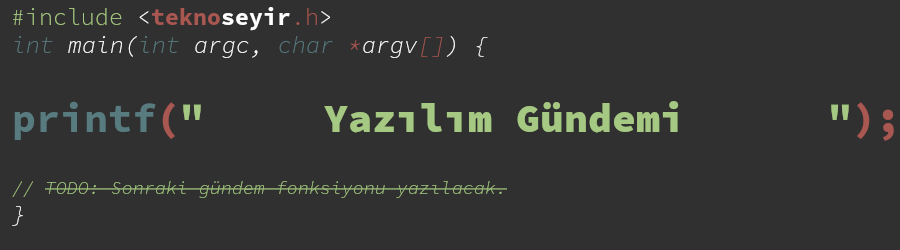

Yazılım Gündemi
Haftalık yazılım gündemi değerlendirmesi

Nedir?
Yazılım Gündemi, benim TeknoSeyir Sosyal platformunda 2019-2020 yılları arasında her hafta düzenli olarak yazmaya çalıştığım bir yazı serisidir. Bu yazı serisi kapsamında, her hafta, o hafta içerisinde programlamanın çeşitli alanlarıyla ilgili internette karşılaştığım haberleri topluyordum. Topladığım haberlerden ilgim ya da bilgim olanları detaylı değerlendiriyor; (b)ilgim olmayanları ise "Diğer Haberler" başlığı altında listeliyordum. İlk yazılarda olmasa da sonradan bir de "Yaklaşan Etkinlikler" bölümü ekledim. Bu bölümde de bir sonraki hafta için planlanmış alanımızla ilgili bulabildiğim tüm etkinlikleri tablo şeklinde veriyordum. Fakat hem biraz motivasyon kaybı yaşadığım için hem de hayatımda farklı şeylere öncelik vermem gerektiği için yazı serisine ara verdim.
Şunu da şöylemeliyim ki: Bu gündem yazıları o hafta içerisinde yazılım dünyasında olan her şeyi kapsama garantisi vermiyor. Takip ettiğim kaynaklarda karşıma çıkan güncel haberleri gündem yazıları içerisine alıyordum. Takip ettiğim kaynakları aşağıdaki Kaynaklar bölümünde bulabilirsiniz.
Motivasyon
TeknoSeyir'in en çok tükettiğim içerikleri Gündem Değerlendirmeleri (teknoloji, oyun ve bilim). Her ne kadar teknoloji sektörünün içerisinden birisi de olsam teknoloji gündemini o kadar sık takip edemiyorum. Aynı çekilde bilim de ilgi alanım fakat onu da sürekli takip edebilecek bir vaktim yok. TeknoSeyir'da hazırlanan bu içerikler tam olarak benim bu ihtiyaçlarımı karşılıyor.
Benim sürekli takip ettiğim bir alan var, o da: Yazılım sektörü. Haftalık Gündem Değerlendirmesi'nde her ne kadar yazılım sektörü içerisinden haberlere sık sık yer verilse de, hitap ettiği kitleye doğal olarak uymadığından, programlamanın daha içerisinden haberler pek fazla yer bulmuyordu. Ben de, "madem kendim sürekli bu haberleri takip ediyorum, o halde neden ben böyle bir içerik çıkartmayayım" dedim ve bu yazı serisini oluşturdum.
TeknoSeyir Sosyal'den birçok arkadaş bu yazı serisini podcast şeklinde sesli bir içerik şeklinde hazırlamamı tavsiye ettiler, hatta şiddetle talep de ettiler fakat ben kendimi yazarak daha iyi ifade edebildiğimi düşündüğüm için girmedim o işlere. Ama günün birinde o yeteneklerimi de geliştirirsem neden olmasın :).
Arşiv
Yazılım Gündemi yazılarının HTML, PDF ve ORG formatındaki sürümlerini aşağıdaki listeden bulabilirsiniz.
Toplam gündem sayısı: 49
Toplam özel yazı sayısı: 1
2020
| Yazılım Gündemi - 2020/26 | 29 Haziran - 5 Temmuz 2020 | HTML | ORG | |
| Yazılım Gündemi - 2020/25 | 22-28 Haziran 2020 | HTML | ORG | |
| Yazılım Gündemi - 2020/24 | 15-21 Haziran 2020 | HTML | ORG | |
| Yazılım Gündemi - 2020/23 | 8-14 Haziran 2020 | HTML | ORG | |
| Yazılım Gündemi - 2020/22 | 1-7 Haziran 2020 | HTML | ORG | |
| Yazılım Gündemi - 2020/21 | 25-31 Mayıs 2020 | HTML | ORG | |
| Yazılım Gündemi - 2020/20 | 18-24 Mayıs 2020 | HTML | ORG | |
| Yazılım Gündemi - 2020/19 | 11-17 Mayıs 2020 | HTML | ORG | |
| Yazılım Gündemi - 2020/18 | 4-10 Mayıs 2020 | HTML | ORG | |
| Yazılım Gündemi - 2020/17 | 27 Nisan - 3 Mayıs 2020 | HTML | ORG | |
| Yazılım Gündemi - 2020/16 | 20-26 Nisan 2020 | HTML | ORG | |
| Yazılım Gündemi - 2020/15 | 13-19 Nisan 2020 | HTML | ORG | |
| Yazılım Gündemi - 2020/14 | 6-12 Nisan 2020 | HTML | ORG | |
| Yazılım Gündemi - 2020/13 | 30 Mart - 5 Nisan 2020 | HTML | ORG | |
| Yazılım Gündemi - 2020/12 | 23-29 Mart 2020 | HTML | ORG | |
| Yazılım Gündemi - 2020/11 | 16-22 Mart 2020 | HTML | ORG | |
| Yazılım Gündemi - 2020/10 | 9-15 Mart 2020 | HTML | ORG | |
| Yazılım Gündemi - 2020/09 | 2-8 Mart 2020 | HTML | ORG | |
| Yazılım Gündemi - 2020/08 | 17 Şubat - 1 Mart 2020 | HTML | ORG | |
| Yazılım Gündemi - 2020/07 | 10-16 Şubat 2020 | HTML | ORG | |
| Yazılım Gündemi - 2020/06 | 3-9 Şubat 2020 | HTML | ORG | |
| Yazılım Gündemi - 2020/05 | 27 Ocak - 2 Şubat 2020 | HTML | ORG | |
| Yazılım Gündemi - 2020/04 | 20-26 Ocak 2020 | HTML | ORG | |
| Yazılım Gündemi - 2020/03 | 13-19 Ocak 2020 | HTML | ORG | |
| Yazılım Gündemi - 2020/02 | 6-12 Ocak 2020 | HTML | ORG | |
| Yazılım Gündemi - 2020/01 | 1-5 Ocak 2020 | HTML | ORG |
2019
| Yazılım Gündemi - 23 | 23-29 Aralık 2019 | HTML | ORG | |
| Yazılım Gündemi - 22 | 16-22 Aralık 2019 | HTML | ORG | |
| Yazılım Gündemi - 21 | 9-15 Aralık 2019 | HTML | ORG | |
| Yazılım Gündemi - 20 | 2-8 Aralık 2019 | HTML | ORG | |
| Yazılım Gündemi - 19 | 18 Kasım-1 Aralık 2019 | HTML | ORG | |
| Yazılım Gündemi - 18 | 11-17 Kasım 2019 | HTML | ORG | |
| Yazılım Gündemi - 17 | 4-10 Kasım 2019 | HTML | ORG | |
| Yazılım Gündemi - 16 | 28 Ekim - 3 Kasım 2019 | HTML | ORG | |
| Yazılım Gündemi - 15 | 21-27 Ekim 2019 | HTML | ORG | |
| Yazılım Gündemi - 14 | 14-20 Ekim 2019 | HTML | ORG | |
| Yazılım Gündemi - 13 | 7-13 Ekim 2019 | HTML | ORG | |
| Yazılım Gündemi - 12 | 30 Eylül - 6 Ekim 2019 | HTML | ORG | |
| Yazılım Gündemi - 11 | 23-29 Eylül 2019 | HTML | ORG | |
| Yazılım Gündemi - 10 | 16-22 Eylül 2019 | HTML | ORG | |
| Yazılım Gündemi - 09 | 9-15 Eylül 2019 | HTML | ORG | |
| Yazılım Gündemi - 08 | 2-8 Eylül 2019 | HTML | ORG | |
| Yazılım Gündemi - 07 | 26 Ağustos - 1 Eylül 2019 | HTML | ORG | |
| Yazılım Gündemi - 06 | 12-25 Ağustos 2019 | HTML | ORG | |
| Yazılım Gündemi - 05 | 5-11 Ağustos 2019 | HTML | ORG | |
| Yazılım Gündemi - 04 | 29 Temmuz - 4 Ağustos 2019 | HTML | ORG | |
| Yazılım Gündemi - 03 | 22-28 Temmuz 2019 | HTML | ORG | |
| Yazılım Gündemi - 02 | 15-21 Temmuz 2019 | HTML | ORG | |
| Yazılım Gündemi - 01 | 8-14 Temmuz 2019 | HTML | ORG |
Kaynaklar
Yazılım Gündemi yazılarındaki haberleri topladığım kaynaklar:
- HackerNews
- Reddit
- /r/programming
- Çeşitli programlama dili ve teknolojilerin kanallarını bir araya getirerek oluşturduğum Custom Feed'im: programming.
- TechCrunch: Genel teknoloji haberleri
- GNU/Linux dünyasıyla ilgili:
- Developer Tech: Programlamayla ilgili genel haberler
- Mobil geliştirme:
Kullandığım Araçlar
Yazılım Gündemi yazılarını Emacs metin editörü içerisinde Org-mode dokümanı şeklinde yazıyorum. HTML ve PDF çıktılarını da bu ORG modu dokümanından elde ediyorum. PDF formatındaki yazılar aslında LaTeX üzerinden derlenip, oluşturuluyor. Org-mode tarafından oluşturulmuş LaTeX dosyaları (.tex uzantılı) dosyalar da ilgili yazılım gündemi yazısının klasöründe mevcut. İsterseniz PDF formatını kendiniz de derleyebilirsiniz.
Yazıları TeknoSeyir'de blog yazısı şeklinde paylaştığım dönemlerde sadece HTML çıktısı alıp, bunu kopyala-yapıştır ile TeknoSeyir'deki editöre alıyor, orada düzenlemelerini yaptıktan sonra paylaşıyordum.
Emacs ve Org-mode konusuyla ilgili başlangıç niteliğinde şöyle iki kaynak önerebilirim (bu araçları ben de bu kaynaklar sayesinde keşfettim):
Emacs ve Org-mode hakkında bilgiliyseniz ve Yazılım Gündemi yazılarını Org dokümanı üzerinden derlemek istiyorsanız, yaptığım bazı özelleştirmelere ihtiyacınız olacak. Bunun için ayarlar.el dosyasına göz atabilirsiniz. İleride yazılım gündemi yazılarını tekrar yazmaya başlarsam ya da boş bir zamanımda motivasyon bulabilirsem, yazım süreci ve teknik tarafla ilgili daha çok bilgi içeren bir yazı hazırlarım.
Bilinen Sorunlar
- Yazıların içerisinde eklediğim GIF (hareketli görseller), yazının PDF
formatındaki halinde sadece bağlantı olarak gösteriliyor. Örnek
- Buna yapabileceğim bir şey yok maalesef. Aslında çeşitli yöntemler ile GIF animasyonlarını da PDF içerisine ekleme yolları var fakat çok zahmetli. Bu durumla karşılaştığınızda GIF dosyasının bağlantısını yeni bir sekmede açarak izleyebilir ya da yazının HTML formatındaki haline bakabilirsiniz.
- PDF formatındaki yazılarda
Bu şekilde biçimlendirilmişifadeler bazen paragraf çizgisinden taşabiliyor. Örnek 1, Örnek 2, Örnek 3.- Açıkcası pek fazla sayıda olmadığı için bu sorunu pek araştırmadım. Şimdilik görmezden gelmenizi rica edeceğim.
- HTML formatındaki yazılarda bazı kod parçaları sayfadan taşabiliyor.
- Bu sorun genelde tek satırdan oluşan, bash ya da powershell komutlarında oluşuyor. HTML formatı için bir çözüm üretebilirim fakat bu sefer de PDF formatındaki halinde istemediğim durumlar oluşuyor. Bu sorunu da şimdilik bırakıyorum.
{kind=link}
{kind=link}
{kind=link}
{kind=link}
Lisans

Bu sayfa ve diğer tüm yazılım gündemi yazıları Eren Hatırnaz tarafından Creative Commons Atıf-GayriTicari-AynıLisanslaPaylaş 4.0 Uluslararası Lisansı (CC BY-NC-SA 4.0) ile lisanslanmıştır.